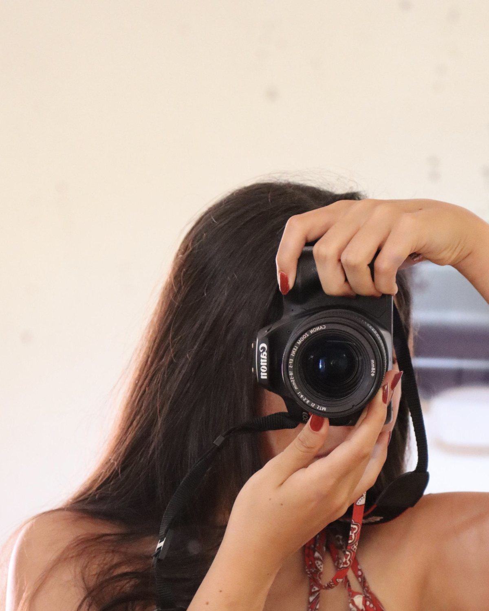

AboutAcerca
Cris Dominguez
Visual artist, teacher, and storyteller. Bilingual in English and Spanish.Artista visual, maestra y narradora. Bilingüe en inglés y español.

BioBiografía
“I am a speck in a speck in an infinite speck in the universe. This makes me feel so small, yet I am part of it all, and that makes all the difference.”
“Soy una mota en una mota en una mota infinita del universo. Eso me hace sentir muy pequeña y, sin embargo, soy parte de todo, y eso lo cambia todo.”
Maria Cristina “Cris” Dominguez is a visual artist working in oil, graphite, ink, photography, collage and installation. She has lived and studied in Lima, Guadalajara and, since 2024, a small town by the beach on the Pacific coast of Nayarit, Mexico. She attends Crimson Global Academy online and expects to graduate in May 2027.
Maria Cristina “Cris” Dominguez es una artista visual que trabaja con óleo, grafito, tinta, fotografía, collage e instalación. Ha vivido y estudiado en Lima, Guadalajara y, desde 2024, en un pequeño pueblo junto al mar en la costa del Pacífico de Nayarit, México. Estudia la preparatoria en línea en Crimson Global Academy y se graduará en mayo de 2027.
In the summer of 2025 a merit scholarship took her to the School of the Art Institute of Chicago, where, in her words, she “rediscovered a long-lost passion” and realized that art and life were no longer separate for her. Back home, she founded a free after-school art program at the local school, where “all my students became my life teachers.” With her classmate Sarah she co-founded The Muses of Apollo, a podcast about how art connects to music, drama, literature, mathematics and science.
En el verano de 2025 una beca por mérito la llevó a la School of the Art Institute of Chicago, donde, en sus palabras, “redescubrió una pasión perdida” y entendió que, para ella, el arte y la vida ya no estaban separados. De regreso en casa fundó un programa gratuito de arte extraescolar en la escuela local, donde “todos mis alumnos se volvieron mis maestros de vida”. Junto con su compañera Sarah cofundó The Muses of Apollo, un pódcast sobre cómo el arte se conecta con la música, el teatro, la literatura, las matemáticas y la ciencia.
Artist StatementDeclaración artística
Art showed me how everything, and I mean everything, is connected: you, me, a random stranger, the land, the sky, the sea, the stars. My work keeps returning to that web. A mandala, a spiral, the diagonal of a square, a handful of seeds: I use pattern and repetition to show how something small belongs to something infinite. I also borrow from science, turning ideas like relativity, infinity and irrational numbers into images.
El arte me mostró que todo, y quiero decir todo, está conectado: tú, yo, un desconocido cualquiera, la tierra, el cielo, el mar, las estrellas. Mi obra regresa una y otra vez a esa red. Un mandala, una espiral, la diagonal de un cuadrado, un puñado de semillas: uso el patrón y la repetición para mostrar cómo algo pequeño pertenece a algo infinito. También tomo prestado de la ciencia y convierto ideas como la relatividad, el infinito y los números irracionales en imágenes.
My process is play. Mistakes stay in the work; I transform them, or let them become something completely new. Making art is a continuous cycle of trial and error, curiosity and discovery, and the children I teach remind me every week how to stay inside it.
Mi proceso es el juego. Los errores se quedan en la obra; los transformo o dejo que se conviertan en algo completamente nuevo. Hacer arte es un ciclo continuo de prueba y error, de curiosidad y descubrimiento, y los niños a quienes enseño me recuerdan cada semana cómo permanecer en él.
In my wordsEn mis palabras
On learning to playSobre aprender a jugar
On teachingSobre enseñar
The Muses of Apollo
EducationFormación académica
- 2024 – 2027
Crimson Global Academy · U.S. & WASC accredited, onlineacreditación EE. UU. y WASC, en línea
- Grades 10–12 · Expected graduation May 2027
- Grados 10–12 · Graduación prevista: mayo de 2027
- Advanced Placement coursework
- Cursos Advanced Placement (AP)
- 2016 – 2024
American School Foundation of Guadalajara · Guadalajara, MX
- Grades 1–9 · U.S. accredited
- Grados 1–9 · acreditación EE. UU.
Art TrainingFormación artística
- 2025
Early College Program Summer Institute, School of the Art Institute of Chicago · Chicago, IL
- 3-week intensive, 35–40 studio hours per week (merit scholarship)
- Intensivo de 3 semanas, 35–40 horas de taller por semana (beca por mérito)
- Created 20+ works in painting, drawing, sculpture, and photography
- Más de 20 obras en pintura, dibujo, escultura y fotografía
- 10 critiques and workshops with instructors and peers
- 10 críticas y talleres con docentes y compañeros
- 2026
Improv Theater StudentEstudiante de teatro de improvisación · Alameda, CA
- Live scene work; taking creative risks and turning mistakes into collaboration
- Escenas en vivo; tomar riesgos creativos y convertir los errores en colaboración
- 2021 – nowhoy
Voice & GuitarCanto y guitarra, Andalucia School of Music
- Weekly practice in tone, versatility, and songwriting
- Práctica semanal de tono, versatilidad y composición
Honors & AwardsDistinciones y premios
- 2026
CGA Press Creative Writing PrizePremio de Escritura Creativa CGA Press
- Awarded to one student across all age levels
- Otorgado a un solo estudiante entre todos los niveles
- 2025
SAIC Merit AwardBeca por Mérito SAIC
- 40% merit scholarship for artistic skill, creativity, and portfolio excellence
- Beca del 40% por habilidad artística, creatividad y excelencia de portafolio
- 2025 – nowhoy
CGA Student AmbassadorEmbajadora estudiantil de CGA
- Led peer meetings and created 7 motivational videos for students
- Dirigió reuniones entre pares y creó 7 videos motivacionales para estudiantes
- 2024 – nowhoy
National Honor Society
- Selected for scholarship, leadership, and service
- Seleccionada por desempeño académico, liderazgo y servicio
- 2023 – nowhoy
Academic Merit ScholarshipBeca de Mérito Académico
- 40% tuition scholarship for academic achievement, leadership, and service
- Beca del 40% de colegiatura por logro académico, liderazgo y servicio
ExhibitionsExposiciones
- 2025
Early College Program Summer Institute Student ExhibitionExposición de estudiantes del Early College Program Summer Institute · School of the Art Institute of Chicago, Chicago, IL GroupColectiva
- Presented The Vision Collection: five radiating ink drawings shown with wood, clay and found-material sculptures, an installation about unity and interconnectedness
- Presentó La colección Visión: cinco dibujos radiales en tinta junto a esculturas de madera, barro y materiales encontrados, una instalación sobre la unidad y la interconexión
- The culmination of a three-week studio intensive attended on a 40% merit scholarship
- Culminación de un intensivo de tres semanas cursado con una beca por mérito del 40%
Teaching & Community ArtsDocencia y arte comunitario
- 2024 – nowhoy
Founder & Art Teacher, After-School Art ProgramFundadora y maestra, programa de arte extraescolar · Montessori “El Jardín,” Nayarit, MX
- Founded a free program for 10 students ages 5–12 at a nonprofit school; 4 hours of weekly instruction
- Fundó un programa gratuito para 10 estudiantes de 5 a 12 años en una escuela sin fines de lucro; 4 horas semanales de clase
- Design lessons in drawing, painting, sculpture, and mixed media tailored to each age and skill level
- Diseña clases de dibujo, pintura, escultura y técnica mixta adaptadas a cada edad y nivel
- Lead individual and collaborative projects that encourage experimentation and confidence
- Guía proyectos individuales y colaborativos que fomentan la experimentación y la confianza
- 2023 – 2024
Design & Marketing DeveloperDiseño y marketing · Helping Hearts, Guadalajara, MX
- Designed social media posts and visual campaigns for mental-wellness events
- Diseñó publicaciones para redes sociales y campañas visuales para eventos de bienestar emocional
- Created accessible, stigma-reducing visuals encouraging student participation
- Creó materiales visuales accesibles que reducen el estigma y motivan la participación estudiantil
- 2025
Teacher AssistantAsistente de maestra · Escuela Bilingüe Internacional, Oakland, CA
- Play-based, personalized learning for 10 children ages 4–8
- Aprendizaje personalizado basado en el juego para 10 niñas y niños de 4 a 8 años
Film, Media & WritingCine, medios y escritura
- 2025 – nowhoy
Co-founder & HostCofundadora y conductora, The Muses of Apollo · art podcast onpódcast de arte en Spotify
- Co-founded with classmate Sarah; explores how art connects to music, drama, literature, mathematics and science
- Cofundado con su compañera Sarah; explora cómo el arte se conecta con la música, el teatro, la literatura, las matemáticas y la ciencia
- 2 episodes released, 4 in production; collaborations with peers in Japan
- 2 episodios publicados, 4 en producción; colaboraciones con jóvenes en Japón
- 2024
Documentary & travel writing, Putney Student TravelDocumental y crónica de viaje, Putney Student Travel · Costa Rica
- Produced a 30-minute documentary (interviews, filming and editing) about a four-week service-learning program
- Produjo un documental de 30 minutos (entrevistas, filmación y edición) sobre un programa de aprendizaje-servicio de cuatro semanas
- Wrote “Service, Hot Chocolate and Community” for the program blog
- Escribió “Service, Hot Chocolate and Community” para el blog del programa
Skills & LanguagesHabilidades e idiomas
- LanguagesIdiomasEnglish (native) · Spanish (native)Inglés (nativo) · Español (nativo)
- SoftwareAdobe Photoshop · Canva · Google Workspace · Microsoft Office · video editingedición de video
- MediaTécnicasOil · graphite · ink · photography · photo collage · ceramics · installation · documentary filmÓleo · grafito · tinta · fotografía · collage fotográfico · cerámica · instalación · cine documental